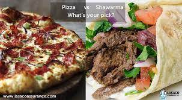

Pizza and Shawarma Recipe

Pizza Ingredients:
- Pizza dough
- Tomato sauce
- Mozzarella cheese
- Pepperoni slices
- Green bell peppers
- Onions
- Mushrooms
- Olive oil
- Dried oregano
Pizza Instructions:
- Preheat your oven according to the pizza dough instructions.
- Roll out the pizza dough on a floured surface to your desired thickness.
- Spread tomato sauce over the pizza dough.
- Sprinkle mozzarella cheese evenly over the sauce.
- Top with pepperoni slices, sliced green bell peppers, diced onions, and sliced mushrooms.
- Drizzle olive oil over the pizza and sprinkle dried oregano on top.
- Bake in the preheated oven until the crust is golden and the cheese is melted and bubbly.
- Your delicious pizza is now ready to be enjoyed!
Shawarma Ingredients:
- Chicken or beef strips
- Yogurt
- Garlic
- Lemon juice
- Ground cumin
- Ground coriander
- Paprika
- Chopped parsley
- Pita bread or flatbreads
- Sliced tomatoes and cucumbers (optional)
Shawarma Instructions:
- Marinate chicken or beef strips in a mixture of yogurt, minced garlic, lemon juice, ground cumin, ground coriander, paprika, and chopped parsley for at least 1 hour.
- Cook the marinated meat in a pan until fully cooked and slightly browned.
- Warm pita bread or flatbreads in the oven or on a stovetop.
- Place the cooked meat on the bread and add sliced tomatoes and cucumbers if desired.
- Roll up the bread to form a shawarma wrap.
- Your tasty shawarma is now ready to be served!
Return to main page
Return to top